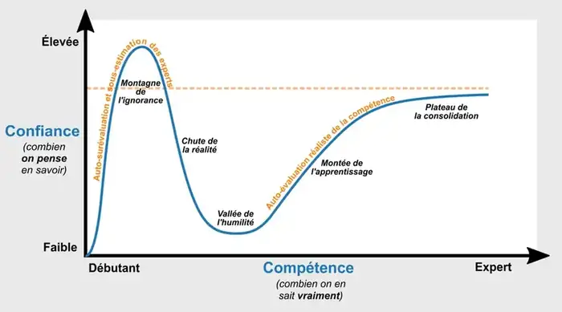
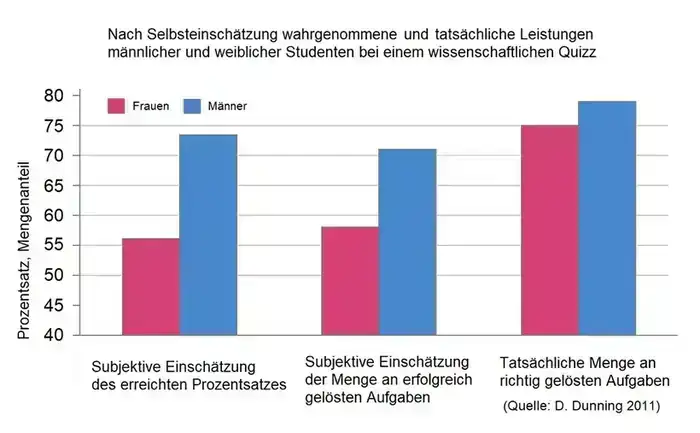
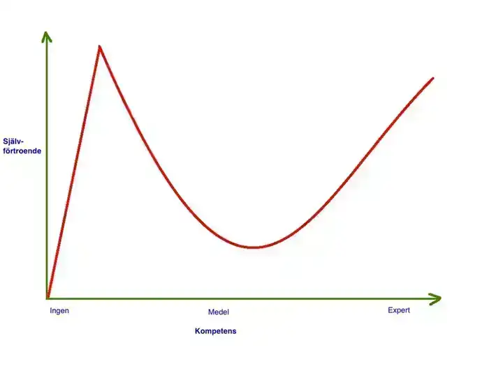

The study
Kruger and Dunning (1999) asked participants to rate their own performance on tests of grammar, logic and humour, and compared those ratings with their actual scores. The lowest scorers overestimated their percentile rank substantially; the highest scorers underestimated theirs slightly. The explanation offered was metacognitive: to know you are doing badly, you need the skill you lack.
Maps, diagrams and images






The corrections
Later statistical work showed that much of the pattern follows from two ordinary effects: regression to the mean, and the fact that self-assessment is noisy. If everyone is uncertain and the low performers have nowhere to go but up in their estimates, you get a version of the graph without any metacognitive story.
The effect survives in a weaker form: low performers are overconfident relative to their performance, and this has been replicated. The 'Mount Stupid' curve — a peak of confidence at low skill, a trough at moderate skill, and a slow rise at high skill — is a cartoon that the original data do not support.
Documented: the original studies, and the overestimation by low performers.
Replicated: a calibration gap between low and high performers, in weaker form.
Explained in part: by regression to the mean and measurement noise.
Not supported: the three-act curve that circulates as 'the Dunning–Kruger effect'.
The honest label: documented as a phenomenon, with the popular graph being a distortion.
Why it is in the archive
Because it is the most misused finding in internet argument, and because the correction is a good example of how a real effect can be inflated into a meme by removing its statistics.
Open resources on this topic
- BookAcademic Attainment, Intellectual Humility, and Self-Confidence: Unpacking the Dunning–Kruger Paradox in Highe — Sixbert Sangwa, Placide Mutabazi · 2025 (Internet Archive, free to read)
- BookAcademic Attainment, Intellectual Humility, and Self-Confidence: Unpacking the Dunning–Kruger Paradox in Highe — Sixbert Sangwa · 2025 (Internet Archive, free to read)
- BookEl Subjecte Extrem Dunning– Kruger Agressiu (Internet Archive, free to read)
- PapersOpen-access articles: DOAJ · PubMed Central · Internet Archive Scholar
- BooksPublic-domain and borrowable copies: Open Library · Project Gutenberg · Google Books
Cite this page
Momin, S. (2026). Dunning–Kruger. The Larger World Archive. https://drsamonline.github.io/LARGE_GLOBE/dunning-kruger.htmlMomin, Sohil. “Dunning–Kruger.” The Larger World Archive, 2026, https://drsamonline.github.io/LARGE_GLOBE/dunning-kruger.html.Momin, Sohil. “Dunning–Kruger.” The Larger World Archive, 2026. https://drsamonline.github.io/LARGE_GLOBE/dunning-kruger.html.@misc{dunningkruger2026dunning,
author = {Momin, Sohil},
title = {Dunning–Kruger},
year = {2026},
howpublished = {The Larger World Archive},
url = {https://drsamonline.github.io/LARGE_GLOBE/dunning-kruger.html},
note = {Last reviewed 20 November 2026}
}Last reviewed 20 November 2026 · Corrections policy · this page is not peer reviewed
Sources for this page
- Wikipedia, “Dunning–Kruger effect” — the study and the statistical criticismen.wikipedia.org
- Wikipedia, “Regression toward the mean” — the statistical artefacten.wikipedia.org
- Wikipedia, “Metacognition” — the proposed mechanismen.wikipedia.org
- Wikipedia, “Self-assessment” — the measurement problemen.wikipedia.org